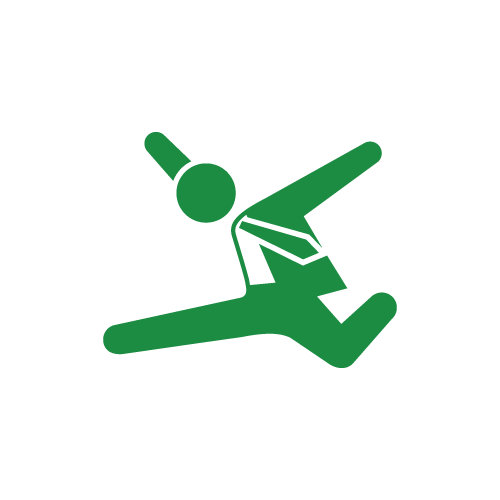

- 自己紹介
- 習熟度
- 作品紹介
- 将来の方向性
- 趣味
工藤 敦史
この度はお忙しい中、面接試験へご対応いただき誠にありがとうございます。
私自身について書かせていただきました。
最後までご覧いただけたら幸いです。
それでは、よろしくお願いします。
自己紹介
はじめまして、この度はポートフォリオをご覧いただきありがとうございます。
工藤敦史と申します。
習熟度
プログラミング
デザインデータを元にコーディング及び動きの実装が出来ます。
- HTML
- CSS
- jQuery
- WordPress

- 

映像制作
映像編集ソフトを用いた編集が出来ます。
- Premiere Pro
- After Effects
作品紹介
よさこいチーム「杏葉」webサイト
2020年4月より、友人たちと立ち上げたよさこいチームのwebサイトです。
よさこい演舞
友人の踊っている映像にAfter Effectsを使用したエフェクトをつけています。
将来の方向性
1年後
より多くの案件に触れ、実践を通じて基礎的な技術及び知識の強化を図っていきます。
他業種からこのWEB業界を志したということもあり、仕事としてコーディングをしたことはありませんが、
出来るだけ早く会社の戦力となり、お客様が喜んでくれるような仕事が出来るよう、経験を積んでいきます。
5年後
WEB制作の仕組みや流れなどを理解した上で、お客様へより適切な提案を出来るWEBディレクターまたは営業職
として活躍したいです。
入社から培った知識や経験を存分に活かし、お客様の問題解決の手助けが出来るような者になります。
お客様の求めるところを最大限踏まえつつ、自社の従業員の負担を最小限にするような仕事をしたいです。
10年後
WEBディレクターとしての経験を積んだ上で、WEBマーケティングの知見も深めていきます。
お客様の求める成果物を作るのみではなく、その後の本当にお客様が求めている成果を生み出せるようWEB
マーケティング等の知識やWEBディレクターとしての経験を活かしサポートしていきたいです。
また、総務として活躍出来るなら、より生産性を上げることで会社内での従業員の業務負担軽減・労働時間削減が出来るよう
努めていきたいです。
趣味
大学１年の頃、友人たちと大学のよさこいチームを立ち上げて以来、
よさこいを趣味としており、現在においてもどっぷりとハマっております。
大学のチームを引退後、大分に本気でよさこいをする社会人チームを作るべく、
東京の社会人チームで2年ほど武者修行を行っておりました。
そしてこの度、2020年4月に友人たちと社会人チームを立ち上げました。
毎年8月に愛知県名古屋市において開催される「にほんど真ん中祭り」という
日本最大級の祭りがあるのですが、そこで上位数チームのみが進出できる
ファイナルステージという決勝戦へ進出することが、私たちの遠い目標です。
このファイナルステージは、これまで大分のみならず九州のよさこいチームは
どこも進出したことのないというかなりハードルの高い目標です。
私たちのチームは割と本気でここを狙って活動をしております。